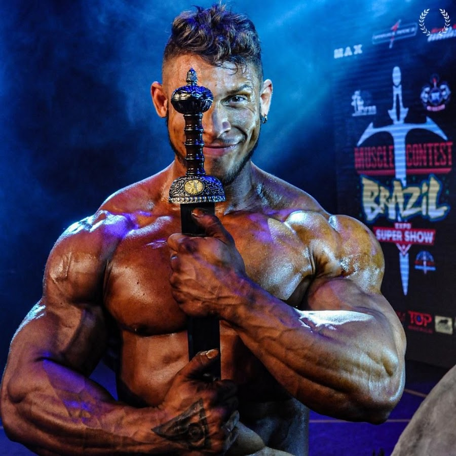

Ramon Dino
Ramon Rocha Queiroz[1] (também conhecido como Dino ou Ramon Dino) é um fisiculturista profissional brasileiro, e um dos principais atletas do mundo. Atualmente, é o vice-campeão do Mr. Olympia Classic Physique, e do Arnold Classic Ohio. Seu peso limite dentro da categoria é de 101kg.